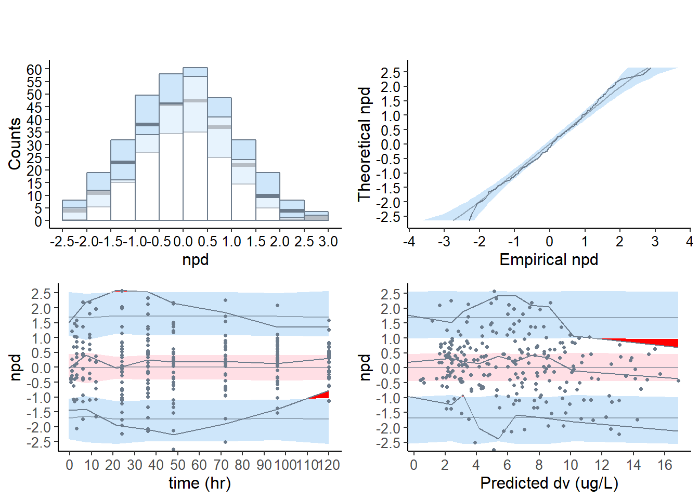

6 Examples
6.1 Load the libraries and the npde package
# Libraries
library( gridExtra )
library( ggplot2 )
library( grid )
library( devtools )
library( mclust )
library( npde )6.2 Load the data and the simulated data
Github repository for the data https://github.com/ecomets/npde30/tree/main/keep/data
# Data
data( warfarin )
data( simwarfarinCov )
fullDatDir = paste0(getwd(),"/data/")
simwarfarinBase = read.table( file.path( fullDatDir, "simwarfarinBase.tab" ), header = TRUE )6.2.1 Warfarin : description of the data
# Warfarin
head( warfarin )## id time amt dv dvid wt sex age
## 1 100 0.5 100 0.0 1 66.7 1 50
## 2 100 1.0 100 1.9 1 66.7 1 50
## 3 100 2.0 100 3.3 1 66.7 1 50
## 4 100 3.0 100 6.6 1 66.7 1 50
## 5 100 6.0 100 9.1 1 66.7 1 50
## 6 100 9.0 100 10.8 1 66.7 1 50# Warfarin with base model
head( simwarfarinBase )## id xsim ysim
## 1 100 0.5 -0.08832318
## 2 100 1.0 0.35687036
## 3 100 2.0 6.36276558
## 4 100 3.0 8.88972144
## 5 100 6.0 11.90216904
## 6 100 9.0 11.93056720# Warfarin with covariate model
head( simwarfarinCov )## id xsim ysim
## 1 100 0.5 -0.07684729
## 2 100 1.0 0.48476881
## 3 100 2.0 6.86641424
## 4 100 3.0 11.54095368
## 5 100 6.0 11.59647752
## 6 100 9.0 10.042608816.3 Compute the normalised prediction distribution errors
wbase <- autonpde( namobs = warfarin, namsim = simwarfarinBase,
iid = 1, ix = 2, iy = 4, icov = c( 3,6:8 ), namsav = "warfBase",
units = list( x = "hr", y = "ug/L", covariates = c( "mg","kg","-","yr" ) ) )## ---------------------------------------------
## Distribution of npde :
## nb of obs: 247
## mean= 0.03419 (SE= 0.06 )
## variance= 0.8753 (SE= 0.079 )
## skewness= -0.1149
## kurtosis= -0.0497
## ---------------------------------------------
## Statistical tests (adjusted p-values):
## t-test : 1
## Fisher variance test : 0.471
## SW test of normality : 1
## Global test : 0.471
## ---
## Signif. codes: '***' 0.001 '**' 0.01 '*' 0.05 '.' 0.1
## ---------------------------------------------
wcov <- autonpde( namobs = warfarin, namsim = simwarfarinCov,
iid = 1, ix = 2, iy = 4, icov = c( 3,6:8 ), namsav = "warfCov",
units = list( x = "h", y = "mg/L", covariates = c( "mg","kg","-","yr" ) ) )## ---------------------------------------------
## Distribution of npde :
## nb of obs: 247
## mean= 0.02928 (SE= 0.059 )
## variance= 0.8549 (SE= 0.077 )
## skewness= -0.07211
## kurtosis= -0.4172
## ---------------------------------------------
## Statistical tests (adjusted p-values):
## t-test : 1
## Fisher variance test : 0.288
## SW test of normality : 1
## Global test : 0.288
## ---
## Signif. codes: '***' 0.001 '**' 0.01 '*' 0.05 '.' 0.1
## ---------------------------------------------show( wbase )## Object of class NpdeObject
## -----------------------------------------
## ---- Component data ----
## -----------------------------------------
## Object of class NpdeData
## Structured data: dv ~ time | id
## Covariates: amt wt sex age
## This object has the following components:
## data: data
## with 32 subjects
## 247 observations
## The data has the following components
## X: time (hr)
## Y: dv (ug/L)
## missing data: mdv (1=missing)
## -----------------------------------------
## ---- Component results ----
## -----------------------------------------
## Object of class NpdeRes
## containing the following elements:
## predictions (ypred)
## prediction discrepancies (pd)
## normalised prediction distribution errors (npde)
## completed responses (ycomp) for censored data
## decorrelated responses (ydobs)
## the dataframe has 247 non-missing observations .
## First 10 lines of results, removing missing observations:
## ypred ycomp pd ydobs npde
## 1 0.5814627 0.0 0.359 -0.43862113 -0.3611330
## 2 3.1220995 1.9 0.454 -0.05116685 0.1636585
## 3 8.4386880 3.3 0.126 -1.35607837 -1.4985131
## 4 11.2936700 6.6 0.140 0.04661369 0.1560419
## 5 12.6249280 9.1 0.127 -0.56691520 -0.5417366
## 6 11.7504645 10.8 0.355 0.89677342 0.9230138
## 7 10.8386881 8.6 0.141 -1.08057832 -1.1358962
## 8 8.5881834 5.6 0.026 -1.89143682 -1.8521799
## 9 7.0369975 4.0 0.019 -1.06275059 -1.0278933
## 10 5.7174611 2.7 0.017 -0.60300349 -0.5947658print( wbase )## Object of class NpdeObject
## -----------------------------------
## ---- Data ----
## -----------------------------------
## Object of class NpdeData
## longitudinal data
## Structured data: dv ~ time | id
## predictor: time (hr)
## covariates: amt (mg), wt (kg), sex (-), age (yr)
## Dataset characteristics:
## number of subjects: 32
## number of non-missing observations: 247
## average/min/max nb obs: 7.72 / 6 / 13
## First 10 lines of data:
## index id time dv amt wt sex age mdv
## 1 1 100 0.5 0.0 100 66.7 1 50 0
## 2 1 100 1.0 1.9 100 66.7 1 50 0
## 3 1 100 2.0 3.3 100 66.7 1 50 0
## 4 1 100 3.0 6.6 100 66.7 1 50 0
## 5 1 100 6.0 9.1 100 66.7 1 50 0
## 6 1 100 9.0 10.8 100 66.7 1 50 0
## 7 1 100 12.0 8.6 100 66.7 1 50 0
## 8 1 100 24.0 5.6 100 66.7 1 50 0
## 9 1 100 36.0 4.0 100 66.7 1 50 0
## 10 1 100 48.0 2.7 100 66.7 1 50 0
##
## Summary of original data:
## vector of predictor time
## Min. 1st Qu. Median Mean 3rd Qu. Max.
## 0.50 24.00 48.00 50.76 72.00 120.00
## vector of response dv
## Min. 1st Qu. Median Mean 3rd Qu. Max.
## 0.000 3.200 6.000 6.346 8.850 17.600
## -----------------------------------
## ---- Key options ----
## -----------------------------------
## Methods
## compute normalised prediction discrepancies (npd): yes
## compute normalised prediction distribution errors (npde): yes
## method for decorrelation: Cholesky decomposition (upper triangular)
## method to treat censored data: Impute pd* and compute y* as F-1(pd*)
## Input/output
## verbose (prints a message for each new subject): FALSE
## save the results to a file, save graphs: TRUE
## type of graph (eps=postscript, pdf=adobe PDF, jpeg, png): eps
## file where results should be saved: warfBase.npde
## file where graphs should be saved: warfBase.eps
## -----------------------------------
## ---- Results ----
## -----------------------------------
## Object of class NpdeRes
## resulting from a call to npde or autonpde
## containing the following elements:
## predictions (ypred)
## Min. 1st Qu. Median Mean 3rd Qu. Max.
## 0.4257 3.1100 6.1058 6.3002 8.5267 16.8707
## prediction discrepancies (pd)
## Min. 1st Qu. Median Mean 3rd Qu. Max.
## 0.0030 0.3115 0.5670 0.5344 0.7615 0.9995
## normalised prediction distribution errors (npde)
## Min. 1st Qu. Median Mean 3rd Qu. Max.
## -2.29037 -0.57258 0.05768 0.03419 0.71437 2.87816
## completed responses (ycomp) for censored data
## decorrelated responses (ydobs)
## the dataframe has 247 non-missing observations .summary( wbase )## Object of class NpdeObject containing the following main components
## data: data
## N= 32 subjects
## ntot.obs= 247 non-missing observations
## subject id: id
## predictor (X): time
## response (Y): dv
## covariates: amt wt sex age
## sim.data: simulated data:
## number of replications: nrep= 1000
## results: results of the computation
## ypred: individual predictions (E_i(f(theta_i,x)))
## pd: prediction discrepancies
## npde: normalised prediction distribution errors
## ycomp: imputed responses for censored data
## ploq: probability of being <LOQ for each observation
## options: options for computations
## prefs: options for graphs6.3.1 Description of the output wcov
# wcov
head( wcov )## Object of class NpdeData
## Structured data: dv ~ time | id
## Covariates: amt wt sex age
## This object has the following components:
## data: data
## with 32 subjects
## 247 observations
## The data has the following components
## X: time (h)
## Y: dv (mg/L)
## missing data: mdv (1=missing)# wcov slots
slotNames( wcov )## [1] "data" "results" "sim.data" "options" "prefs"# wcov covariates
wcov@data@name.covariates## [1] "amt" "wt" "sex" "age"# wcov graphical options
#wcov@prefs6.4 Data
6.4.1 Plot the data for the base model
plot.type = "data" : Plots the observed data in the dataset
# wbase model
plot( wbase, plot.type = "data" )6.4.2 Default plot for the base model
# base model
plot( wbase, which = "npde" )plot.type = "hist" Histogram
plot.type = qqplot QQ-plot of the npde versus its theoretical distribution
plot.type = x.scatter Scatterplot of the npde versus the predictor
plot.type = pred.scatter Scatterplot of the npde versus the population predicted values
hist = plot( wbase, plot.type = "hist", which = "npde" )
qqplot = plot( wbase, plot.type = "qqplot", which = "npde" )
x_scatter = plot( wbase, plot.type = "x.scatter", which = "npde" )
pred_scatter = plot( wbase, plot.type = "pred.scatter", which = "npde" )
grid.arrange( grobs = list( hist, qqplot ), nrow = 1, ncol = 2 )grid.arrange( grobs = list( x_scatter, pred_scatter ), nrow = 1, ncol = 2 )6.5 Covariate model
6.5.1 Default plots
# covariate model
plot( wcov , which = "npde")6.5.2 Scatterplots of npd
plot.type = "x.scatter" : Scatterplot of the npd versus the predictor
covsplit = TRUE : split by categories
# Splitting npde vs time plots by covariates
plot( wcov, plot.type = "x.scatter", covsplit = TRUE, which.cov = c( "wt" ) )# plot( wcov, plot.type = "x.scatter", covsplit = TRUE, which.cov = c( "wt","sex" ) )
# plot( wcov, plot.type = "x.scatter", covsplit = TRUE, which.cov = c( "wt" ), which = "pd" )
# plot( wcov, plot.type = "x.scatter", covsplit = TRUE, which.cov = c( "wt" ), which = "npde" )6.5.3 Plot npd as boxplots for each covariate category
plot.type = "covariates" npd represented as boxplots for each covariate category
wt.covariate.boxplot <- plot( wcov, plot.type = "covariates", which.cov = c( "wt" ) )
sex.covariate.boxplot <- plot( wcov, plot.type = "covariates", which.cov = c( "sex" ) )
# grid plot
grid.arrange( grobs = list( wt.covariate.boxplot[[1]], sex.covariate.boxplot[[1]] ),
nrow = 1, ncol = 2 )6.5.4 Diagnostic plots for covariates
plot.type = "cov.scatter" : Scatterplot of the npd versus covariates
plot.type = "covariates" : Boxplots for each covariate category
plot.type = "ecdf" : Empirical distribution function
# cov.scatter
xwt.covscatt <- plot( wcov, plot.type = "cov.scatter", which.cov = "wt", bin.method = "optimal" )
# ecdf
xwt.ecdf <- plot( wcov, plot.type = "ecdf", covsplit = TRUE, which.cov = "wt" )
# x.scatter
xsex.covscatt <- plot( wcov, plot.type = "x.scatter", covsplit = TRUE, which.cov = "sex" )
# ecdf
xsex.ecdf <- plot( wcov, plot.type = "ecdf", covsplit = TRUE, which.cov = "sex" )
# grid plot
grid.arrange( grobs = list( xwt.covscatt, xwt.ecdf, xsex.covscatt, xsex.ecdf ),
nrow = 2, ncol = 2 )6.6 Reference profile
6.6.1 Reference plot using one subject
plot.tnpde <- plot( wcov, plot.type = "x.scatter",
ref.prof = list( id = 2 ),
main = "tnpd with reference profile ID = 2" )
plot.vpc <- plot( wcov,
plot.type = "vpc",
main = "VPC" )
grid.arrange( grobs = list( plot.tnpde, plot.vpc ), nrow = 1, ncol = 2 )6.6.2 Reference plot using all subjects
plot.tnpde <- plot( wcov, plot.type = "x.scatter",
ref.prof = "all", main = "tnpd", ylim = c ( 0,20 ) )
plot.vpc <- plot( wcov, plot.type = "vpc", main = "VPC", ylim = c( 0, 20 ) )
grid.arrange( grobs = list( plot.tnpde, plot.vpc ), nrow = 1, ncol = 2 )6.7 Computing npde in the presence of BQL data
data( virload )
data( virload20 )
data( virload50 )
virload <- read.table( file.path( fullDatDir, "virload.tab" ), header = TRUE )
simvirload <- read.table( file.path( fullDatDir, "simvirload.tab" ), header = TRUE )6.7.0.1 Censoring methods
cens.method = "omit"
cens.method = "ipred"
cens.method = "ppred"
cens.method = "cdf"
x50 <- autonpde( virload50, simvirload,
iid = 1, ix = 2, iy = 3, icens = 4,
boolsave = FALSE, units = list( x = "hr", y = "cp/mL, log 10 base" ) )## ---------------------------------------------
## Distribution of npde :
## nb of obs: 300
## mean= -0.06291 (SE= 0.057 )
## variance= 0.9616 (SE= 0.079 )
## skewness= 0.1431
## kurtosis= -0.1453
## ---------------------------------------------
## Statistical tests (adjusted p-values):
## t-test : 0.802
## Fisher variance test : 1
## SW test of normality : 1
## Global test : 0.802
## ---
## Signif. codes: '***' 0.001 '**' 0.01 '*' 0.05 '.' 0.1
## ---------------------------------------------x50.ipred <- autonpde( virload50, simvirload,
iid = 1, ix = 2, iy = 3, icens = 4, iipred = 5,
boolsave = FALSE, cens.method = "ipred",
units = list( x = "hr", y = "cp/mL, log 10 base" ) )## ---------------------------------------------
## Distribution of npde :
## nb of obs: 300
## mean= 0.02887 (SE= 0.063 )
## variance= 1.185 (SE= 0.097 )
## skewness= 0.04312
## kurtosis= -0.1197
## ---------------------------------------------
## Statistical tests (adjusted p-values):
## t-test : 1
## Fisher variance test : 0.0924 .
## SW test of normality : 1
## Global test : 0.0924 .
## ---
## Signif. codes: '***' 0.001 '**' 0.01 '*' 0.05 '.' 0.1
## ---------------------------------------------x50.ppred <- autonpde( virload50, simvirload,
iid = 1, ix = 2, iy = 3, icens = 4,
boolsave = FALSE, cens.method = "ppred",
units = list(x = "hr", y = "cp/mL, log 10 base" ) )## ---------------------------------------------
## Distribution of npde :
## nb of obs: 300
## mean= 0.02581 (SE= 0.058 )
## variance= 0.9968 (SE= 0.082 )
## skewness= -0.05015
## kurtosis= 0.8068
## ---------------------------------------------
## Statistical tests (adjusted p-values):
## t-test : 1
## Fisher variance test : 1
## SW test of normality : 0.00144 **
## Global test : 0.00144 **
## ---
## Signif. codes: '***' 0.001 '**' 0.01 '*' 0.05 '.' 0.1
## ---------------------------------------------x50.omit <- autonpde( virload50, simvirload,
iid = 1, ix = 2, iy = 3, icens = 4,
boolsave = FALSE, cens.method = "omit",
units = list( x = "hr", y = "cp/mL, log 10 base" ) )## ---------------------------------------------
## Distribution of npde :
## nb of obs: 169
## mean= 0.1417 (SE= 0.07 )
## variance= 0.8307 (SE= 0.091 )
## skewness= -0.05682
## kurtosis= -0.3378
## ---------------------------------------------
## Statistical tests (adjusted p-values):
## t-test : 0.135
## Fisher variance test : 0.321
## SW test of normality : 1
## Global test : 0.135
## ---
## Signif. codes: '***' 0.001 '**' 0.01 '*' 0.05 '.' 0.1
## ---------------------------------------------6.7.1 Data
impute.loq : the imputed values are plotted for data under the LOQ
line.loq : horizontal line should is plotted at Y=LOQ in data and VPC plots
plot.loq : data under the LOQ are plotted
x50@data@loq## [1] 1.7x1 <- plot( x50, plot.type = "data",
xlab = "Time (hr)", ylab = "log(Viral load) (cp/mL)",
line.loq = TRUE, ylim = c(0,6.5),
main = "LOQ imputed using cdf" )
x2 <- plot( x50, plot.type = "data",
xlab = "Time (hr)", ylab = "log(Viral load) (cp/mL)",
plot.loq = FALSE, line.loq = TRUE, ylim = c(0,6.5),
main = "LOQ removed from plot" )
x3 <- plot( x50, plot.type = "data",
xlab = "Time (hr)", ylab = "log(Viral load) (cp/mL)",
impute.loq = FALSE, line.loq = TRUE, ylim = c(0,6.5),
main = "LOQ as in dataset before imputation" )
x4 <- plot( x50.ipred, plot.type = "data",
xlab = "Time (hr)", ylab = "log(Viral load) (cp/mL)",
line.loq = TRUE, ylim = c(0,6.5),
main = "LOQ imputed to individual prediction" )
grid.arrange( grobs = list(x1,x2,x3,x4 ), nrow = 2, ncol = 2 )6.7.2 Comparing the censoring methods
6.7.2.1 Default graphs for the virload50 dataset, default censoring method “cdf”
6.7.2.2 Default graphs for the virload50 dataset, censoring method “omit”
6.7.2.3 Default graphs for the virload50 dataset, censoring method “ipred”
6.7.2.4 Default graphs for the virload50 dataset, censoring method “ppred”
6.7.3 VPC plots
vpc.cdf = plot( x50,plot.type = "vpc", line.loq=TRUE )
vpc.omit = plot( x50.omit,plot.type = "vpc" )
grid.arrange( grobs = list( vpc.omit, vpc.cdf ), nrow=1, ncol=2)6.7.4 Scatterplots
xscatter.omit <- plot( x50.omit, plot.type = "x.scatter" )
xscatter.cdf <- plot( x50, plot.type = "x.scatter" )
grid.arrange( grobs = list( xscatter.omit, xscatter.cdf ), nrow = 1, ncol = 2 )plot(x50 , plot.type = "x.scatter", plot.box = TRUE )6.7.5 Plot for \(\mathbb{P}(Y<LOQ)\)
# P(Y<LOQ)
plot( x50, plot.type = "loq", main = " ")